8
പച്ചയാം വിരിപ്ിട്ട സഹ്്യനിൽ തല വെച്്ചും
പച്ചയാം വിരിപ്ിട്ട സഹ്്യനിൽ തല വെച്്ചും
സ്വച്ാബ്ധിമണൽ ത്തിട്്ടാാംാം പാദോോപധാനം പൂണ്്ടുുംും
സ്വച്ാബ്ധിമണൽ ത്തിട്്ടാാംാം പാദോോപധാനം പൂണ്്ടുുംും
പള്ളികൊsൊണ്ടീടുുന്ന നിൻ പാർശ്്വയുുഗ്മത്തെക്ാത്തുു-
പള്ളികൊsൊണ്ടീടുുന്ന നിൻ പാർശ്്വയുുഗ്മത്തെക്ാത്തുു-
കൊsൊള്ളുന്നുു, കുുമാരിയുും ഗോോuോകർണ്ണേശനുുമമ്മേ
കൊsൊള്ളുന്നുു, കുുമാരിയുും ഗോോuോകർണ്ണേശനുുമമ്മേ
മാതൃവന്ദനം – വള്ളത്്തതോൾ നാരായണമേനോ�ോൻ
മാതൃവന്ദനം – വള്ളത്്തതോൾ നാരായണമേനോ�ോൻ
Read an extract from Vallathol Narayana Menon’s poem which describes
the scenic beauty of Kerala.
To the east are the towering mountains, many rivers flowing from
them, boats floating along backwaters, and to the west a long stretch
of coastline, fields, plains.... green everywhere, pleasant climate. How
beautiful is our Kerala!
Are there any such features like hills, beaches, water bodies , etc. in
your area? The physiography of Kerala consists of diverse geographical
features.
Know Our Land
Know Our Land
Page 29

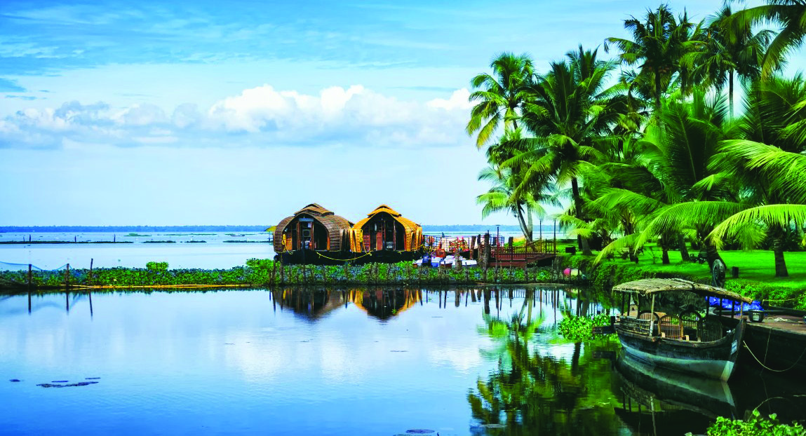
Page 30

134
Social Science Class V
How does Bharathapuzha influence the agriculture, food habits,
transport, etc. of the people in Vaniyamkulam Grama Panchayat?
Discuss.
•
The fertile soil on the banks of Bharathapuzha is
suitable for agriculture.
•
•
•
Vaniyamkulam has a physiography consisting of hills and plains. Which
is the major river seen in the outline?
•
....................................................
Bharathapuzha flows along the southern border of Vaniyamkulam
Grama Panchayat.
Find out the major mode of transport that runs parallel to Bharathapuzha.
•
....................................................
Most of the areas of the panchayat are the catchment areas of
Bharathapuzha. The river is used for water transport and fishing.
The fertile soil along the banks of the river contributes to agricultural
prosperity.
Not by scale
District boundary
Panchayat boundary
Railway line
River
Index
Figure - 1
Reference: Vaniyamkulam Panchayat Directory, 2001
Now, let us observe the outline of a Grama Panchayat in Kerala.
Vaniyamkulam Grama Panchayat
Vaniyamkulam
Ananganadi
Grama
Panchayat
Bharathapuzha
Shornur
Municipality
Ottappalam
Municipality
Chalavara
Gramapanchayat
Page 31

135
Know Our Land
Aren't the agriculture and other occupations in your locality related
to its geographical features? Examine them based on the indicators
given. Help of the teacher can also be sought.
• weather
• waterbodies
• plains
• hilly areas
• fertility of soil
• transportation
• industries
Prepare a regional geographical document incorporating the information of
geographical features you have collected. Use the titles given below. Present
the geographical document in the Social Science Club.
Regional Geographical Record
•
outline of the area / ward
•
geographical features
•
relationship of the life
of the people with the
geographical features.
•
problems faced
•
solutions
We have familiarised ourselves with certain geographical features of
Vaniyamkulam Grama Panchayat. Haven't you observed that such
geographical features influence the life of people of that place in many
ways?
List out the various geographical features, various crops and occupations
of the area where you live in.
•
•
•
•
•
•
You have discussed the geographical features of your locality. Are the
physiographical features of our state similar to them?
How about an inquiry into Kerala's physiography, soil, water, climate
and crops, and their impact on people's lives?
Page 32
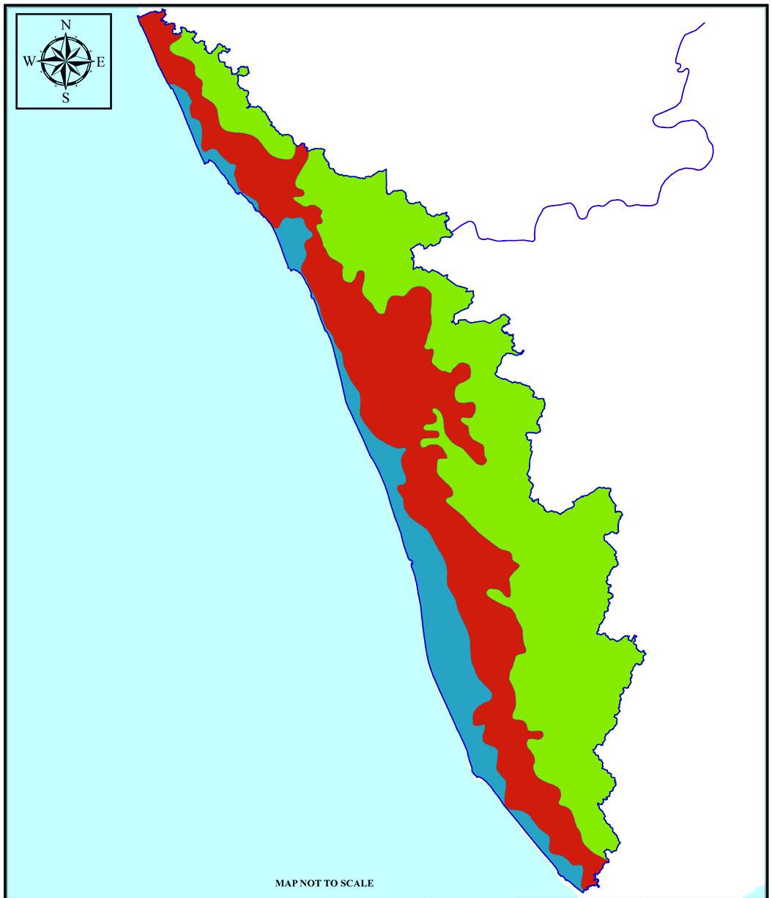
136
Social Science Class V
Karnataka
Tamil Nadu
Kerala
Lakshadweep Sea
Figure - 2
Index
Coastal area
Midland
Highland
below 7.5 meter
between 7.5 meter and
75 meter
above 75 meter
MAP NOT TO SCALE
Physiography of Kerala
Observe the map and find out the following. List them in your notebook.
Now, let's examine more about the physiography of Kerala.
Highland
Find the location of the highland on the physiographical map of Kerala.
It is a physiographical section that is located at about 75 meters above
sea level and includes hills, mountains, and peaks. Highland is a region
that receives heavy rainfall and is generally full of greenery. All the 44
rivers of Kerala originate from the Highlands.
• three physiographical divisions of Kerala
• altitude of each physiographic division from the sea level.
• physiographical division of Kerala which is adjacent to the
Lakshadweep Sea
• physiographical area of Kerala which lies along the state borders of
Tamil Nadu and Karnataka
Page 33

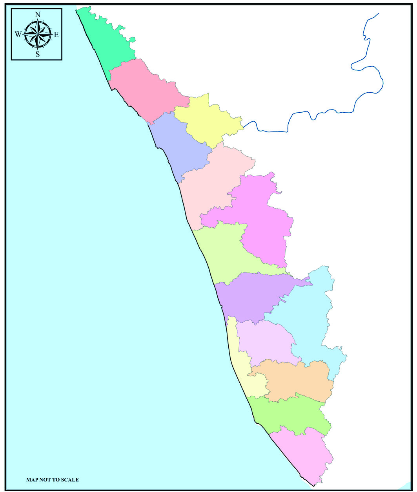
137
Know Our Land
Thiruvananthapuram
Kollam
Pathanamthitta
Alappuzha
Idukki
Ernakulam
Thrissur
Palakkad
Kozhikode
Malappuram
Wayanad
Kasaragod
Kannur
Kottayam
Karnataka
TamilNadu
Lakshadweep Sea
Kerala
Political Map
Place a tracing paper over the given political map and draw the districts. Then
superimpose tracing paper properly on the physiographical map of Kerala in
Figure 2 (Page 136) and find the following.
•
physiographic divisions consisting of each district
•
districts with coastal areas
•
districts comprising all three physiographic categories
Midland
Locate the midland on the given map (Figure 2) on page 136. Midland is
a physiographic division located between the highlands and the coastal
region. The altitude of this area ranges from 7.5 meters to 75 meters
above sea level. The midland is characterised by hillocks, valleys, and
river banks.
Coastal Area
This is a landscape that is adjacent to the Lakshadweep Sea. Located close
to the coastal region, this area has an altitude up to 7.5 meters above sea
level.
Page 34
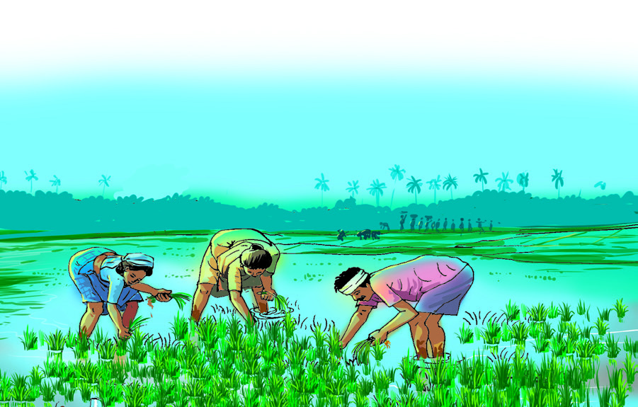
138
Social Science Class V
Monsoon
Monsoons are winds that change
the direction in accordance with the
seasonal changes. The southwest monsoon
winds normally blow from June to September
in the northern part of the equator in the Indian
Ocean. They move towards inland from the
southwest direction.
As they blow from the sea, they are moist.
These winds which enter the land are blocked
by the Western Ghats. As a result, the western
coasts, including Kerala, receive high rainfall.
This is the southwest monsoon. In Kerala, this
monsoon season is known as ‘Kalāvarsham’.
During the months of October and November,
the monsoon winds blow in the opposite
direction from the northeast. These winds
are known as the northeast monsoon winds.
Since a part of these winds passes over the
Bay of Bengal, it becomes moisture-laden
and causes rain in many parts of the southern
states of India. This monsoon season is known
as ‘Thulāvarsham’ in Kerala.
മണ്ണേ നമ്പിലേലയ്യാ
മണ്ണേനമ്പിലേലയ്യാ മരമിിരുക്ക്...
മരത്തെനമ്പിലേലയ്യാ മണ്ണിിരുക്ക്...
മരത്തെനമ്പിലേലയ്യാ കൊsൊമ്പിരുക്ക്...
കൊsൊമ്പെനമ്പിലേലയ്യാ ഇലയിിരുക്ക്...
ഇലയെനമ്പിലേലയ്യാ പൂവിിരുക്ക്...
പൂവേനമ്പിലേലയ്യാ കാായിിരുക്ക്...
കായേനമ്പിലേലയ്യാ പഴമിിരിിക്ക്...
പഴത്തേനമ്പിലേലയ്യാ നാാമിിരുക്ക്...
നമ്്മേനമ്പിലേലയ്യാ നാാടിിരുക്ക്...
Read the chapters narrating how soil is formed in
Jawaharlal Nehru's book 'Letters From a Father to
His Daughter' and discuss in the class.
Weather of Kerala
Kerala is a land that receives
sufficient amount of rain. There
are two main rainy seasons in
Kerala.
• Southwest
Monsoon
or
Kālavarsham
• Northeast
Monsoon
or
Thulāvarsham
Kerala receives most of the
rainfall during the southwest
monsoon.
Summer season in Kerala is from
March to May. It feels hotter
these days. Intermittent rains
in summer provide some relief
from the intense heat.
Soil Types in Kerala
-Reference Mannezhuthu 2008-2009
Listen to the song of Irular of
Attappadi. Soil is as important
as water and air for the survival
of living organisms. Human
civilization developed through
the mutual interaction between
soil and humans. Without
soil, there are no plants and no
organisms that depend on them.
How is soil formed?
Soil is one of the main factors responsible for the existence of life on earth.
The process of weathering of rock to form soil takes a long time. Topography,
Page 35


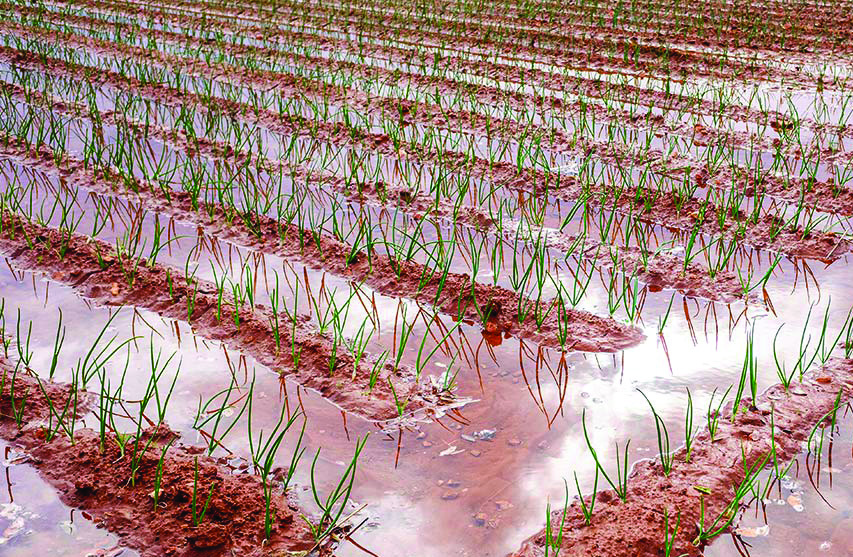
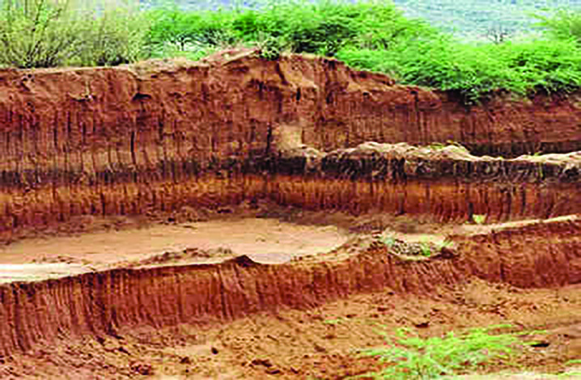
139
Know Our Land
Collect more information about important types of soil with the
help of the teacher, make notes, and present them in the class.
Collect pictures of a variety of human activities that use soil.
Prepare a digital album with the help of teachers and present
them to the Social Science Club.
Application of excessive fertilizer and
pesticide
Plastic waste in soil
Unscientific mining
Unscientific agricultural practices
climate, rock structure and age, the activity of plants, animals, and other
microorganisms contribute to soil formation. It is estimated that it takes more
than a thousand years for the formation of soil of one inch thickness.
Laterite Soil, Red Soil, Alluvial Soil, and Forest Soil are the main soil types in
Kerala. Black Soil and Peat Soil are also found in some regions.
Observe the pictures.
Illustrations given are situations in which the unique characteristics of
soil are adversely affected. Find out and enlist more such contexts.
•
•
•
•
Page 36


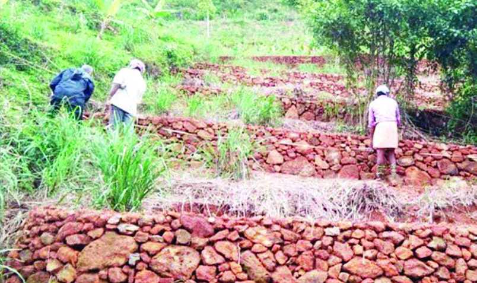
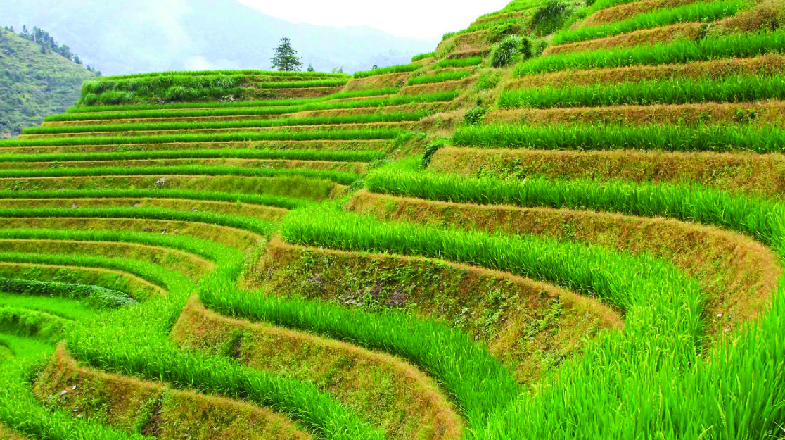


140
Social Science Class V
Mangroves
Coir Geotextiles
Stone wall fence
Terrace farming
The
United
Nations
observes December 5 as
World Soil Conservation
Day.
Collect soil types from your area and identify their characteristics with
the help of the teacher, write them on a chart and demonstrate to the
class.
What are the sources of water in your area?
Kerala has an undulating topography which lays uneven from Sahya
Mountain in the east to the Arabian Sea in the west. The rivers that
What are the measures that can be adopted for the conservation of soil?
Observe the pictures of the methods of soil conservation.
Find out and enlist more measures of
soil conservation.
•
•
•
Water Sources of Kerala
Water is a natural resource that is indispensable for human existence.
What are the sources of water on earth?
•
rivers
•
springs
•
•
Page 37


141
Know Our Land
Prepare placards of water conservation messages and organise a
rally for water conservation. Prepare a speech about the importance
of rainwater harvesting.
Are the waterbodies in your country being polluted? Discuss.
What suggestions can be put forward to protect water bodies
from getting polluted?
List out the rivers in Kerala observing the ‘Kerala River Map’ kept
in your Social Science lab. Classify the rivers flowing eastward and
westward.
originate from the Sahya Mountain ranges flow to the backwaters and
the sea and make Kerala abundant in water. Apart from these, there are
many lakes and ponds in our land. There are 44 rivers in Kerala which
originate from the highlands. Of these, 3 rivers flow eastward and 41
rivers flow westward.
Haven't you noticed that though our waterbodies are enriched during
the two rainy seasons, many of them dry up when the rainy seasons are
over? Find out the reasons for this.
Only a small amount of the world's total water supply is available as
pure water. It is the duty of every one of us to conserve the precious
and clean water. Water conservation can be ensured through rain pits,
rainwater harvesting, bunds, and mulching.
Observe the pictures.
Under what conditions do water sources become polluted?
Page 38

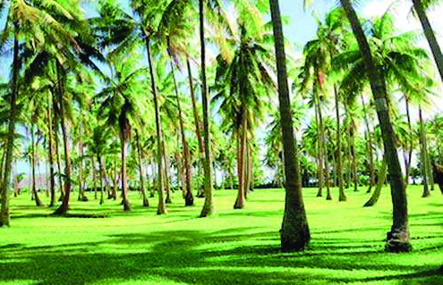


142
Social Science Class V
Project
Implementation
Ini Njan Ozhukatte
Haritha Keralam Mission
Malinya Mukatham Navakeralam
Department of Local
Self-Government
Thelineerozhukum Navakeralam
Department of Local
Self-Government
Jal Jeevan Mission
Government of India
Crop
Diversity
Which are the crops shown in the picture?
Identify the physiographical divisions in which each of these crops
is cultivated?
Why is tea not cultivated in all topographical sections in Kerala?
Rubber cultivation is generally not seen in coastal areas. What
could be the reason?
Pollution of waterbodies endangers the survival of living organisms.
The government implements various schemes to protect and maintain
the existing water sources. Check the list given below.
Find out the objectives of these projects.
Crop Diversity of Kerala
Observe the pictures of some crops found in different regions of Kerala.
Page 39

143
Know Our Land
List out the major crops of highland, midland, and coastal
regions.
Identify and complete the list with the essential factors that come
together to ensure the agricultural prosperity of an area?
• suitable topography
•
• fertile soil
•
•
•
The agriculture of each region is related to its physiography and climate.
Soil, irrigation facilities and altitude from sea level also contribute to the
cultivations.
Tea is extensively cultivated in areas like Munnar and Peerumedu in
Idukki district, Meppadi and Vythiri in Wayanad district and Ponmudi
in Thiruvananthapuram district. Paddy cultivation is widespread in
Palakkad district and Kuttanad.
Observe and list out the major crops grown in your area.
•
•
•
•
Fertile soil and abundant rainfall provide ideal conditions for a variety
of crops in Kerala. The cold climate experienced due to the high altitude
above sea level and the sloping topography create a favourable condition
for the cultivation of crops like tea, cardamom, coffee, pepper, etc. in the
highland region.
The topography and soil characteristics contribute to the crop diversity
in the midland. Along with tubers such as tapioca, colocasia, and yams,
banana as well as rubber cultivation are widespread in the midlands.
Kerala is the largest producer of rubber in India.
The presence of alluvial soil in the coastal area is suitable for paddy
cultivation. The saline soil here is favourable for the abundant growth of
coconuts. The backwaters are used for fish farming.
Agricultural practices of an area are formulated in tune with the prevailing
climate, soil and rainfall in each physiographical division. Many of
the festivals in Kerala are closely related to weather and topography.
Do you know that Onam is a harvest festival? Similarly, Vishu is also
associated with harvest. Examples of celebrations related to weather and
topography include boat races and bull-race held in the waterbodies of
Kerala after the monsoon season. Findout similar examples.
Page 40
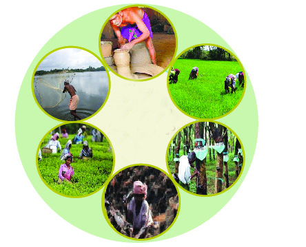
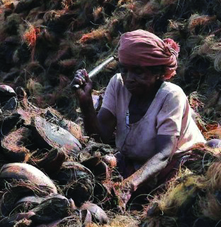
144
Social Science Class V
Employment
and
Physiography
Employment Diversity in Kerala
We have already discussed that a variety of agricultural activities are
carried out in each physiographical condition. Is agriculture the only
employment that the people of Kerala are engaged in? What are the
employments prevalent in your area?
•
•
•
Along with progress in agriculture, advancements in other fields of work
are important to improve the living conditions of people.
Natural resources and human resources play an important role in
determining the progress of the people of a region. The work culture of
each region has been formed according to the topography and climate
of that region. Husk threshing and rope picking in backwater shores,
paddy cultivation and duck rearing in Kuttanad are examples for this.
Observe the images given below.
List out the employments mentioned in the picture in tune with
appropriate physiographical divisions.
Page 41

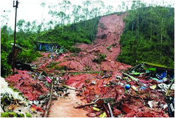


145
Know Our Land
Investigate and make notes on the changes brought about by modern
technology in agricultural and traditional occupations.
Physiographical
divisions
Employments
Highland
Midland
Coastal area
Advancements in education, improved socio-infrastructured conditions
and modern technology in Kerala have led to positive changes in the
employments people engaged in.
Kerala and Natural Disasters
We have seen that Kerala's natural beauty and favourable climate make
people's lives easier. But sometimes, natural disasters and calamities
occur. Kerala has a physiography with many ecologically vulnerable
areas. Apart from the crises caused by human intervention, some natural
calamities also harm the living world.
Observe the pictures.
Images related to natural calamities are given. List out the natural
disasters to life, property and the environment? Complete the list.
• cyclone
•
•
• wild fire
•
•
What are natural disasters?
Natural disasters are natural phenomena that endanger life, property,
and the environment. Such natural calamities adversely affect humans
and other living beings. The tsunami in 2004 caused huge damage in
Kerala. Ask your elders about it.
Page 42
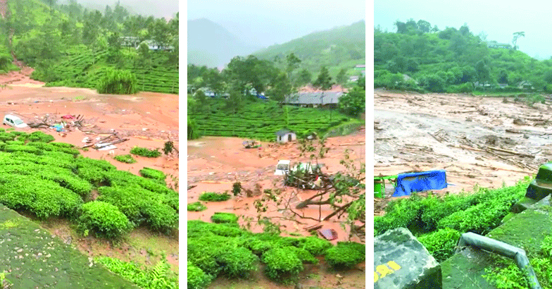
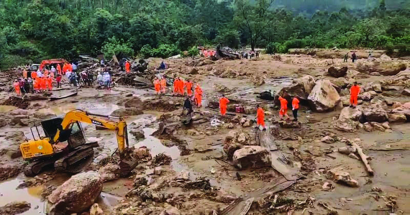
146
Social Science Class V
Kavalappara Landslide (2019)
Pettimudi Landslide (2020)
Volunteers to Lend a
Helping Hand during
Disaster
Collection of Relief
Resources All over the
Region
Young People at the
Forefront in Cleaning
Operations: Flood Victims
Back to Their Homes
Fisherfolk in the
Face of Disaster
with Boats
Coordinated Activities of
Various Departments of the
Government
The major floods in Kerala in 2018, landslides in Kavalappara in 2019
and Pettimudi in 2020 have made life difficult for the people in those
areas.
Disaster Management and Mitigation
Watch the news collage.
Page 43


147
Know Our Land
What sort of preparations are to be made in advance for the prevention
and mitigation of disasters?
Preparations
Preparations
Pre-Disaster
Management measures
Rescue operations
during disasters
Post-disaster
rehabilitation
Anticipate certain
disasters with the help of
modern technology.
Ensure necessary
measures for the rescue
operations.
Rehabilitate the
disaster victims
In disaster-prone areas,
issue warnings and take
steps to create awareness
and evacuate people.
Set relief camps and
plan for the provision of
food, clothing, shelter,
and medical care.
Take steps to manage
situations of disasters
in future.
Government departments and systems working for the
management and mitigation of natural disasters
•
Kerala Revenue Disaster Management Department
•
State Disaster Management Authority
•
District Disaster Management Authority
•
Disaster Risk Analysis Cell
•
Land & Disaster Management Institute
Prepare a digital album with the help of your teacher by collecting
pictures related to prevention and relief operations of natural
disasters.
The news collage given shows how Kerala faced the 2018 flood.
Kerala joined hands for relief and rescue operations. As a result of the
joint efforts of various government departments, voluntary organisations,
the youth, traders and fishermen, the severity of this major natural
disaster has been mitigated.
Can you identify any volunteer who got involved in the flood relief
work in your locality? Enquire and learn their experiences.
Page 44

148
Social Science Class V
Haven't we realised how the diversity of land we live in, soil, water,
climate, and crops influence our lives? We have the responsibility to
preserve the abundance of this soil and pure water for future generations.
So, we should give priority to development and the way of life that does
not disturb the balance of nature.
Extended Activity
1. Prepare a wall poster with information about soil types,
occupations, crops, etc. in all the three physiographical divisions
of Kerala.
2. Find out the properties of soil on your school premises with
the help of 'Mannu’ App. Select the crops that can be cultivated
on the school premises from the app. Under the auspices of the
Agricultural Club, increase the fertility of the soil using the tips
from Mannu App and cultivate vegetables enough for your
lunch.
3. Organise a seminar based on the topic 'Kerala’s Physiography
and Life of the People.'
• Collect information on soil, water, crops, and occupations
for each physiographical division.
4. Discuss the problems faced by the agriculture sector in your
locality with the local farmers. Also ask for solutions to their
issues. Prepare a report.
5. Visit the official website of the Kerala Disaster Management
Authority and learn its activities.